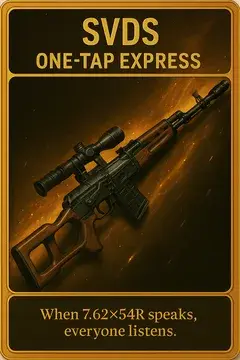
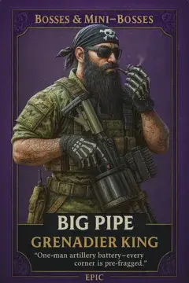
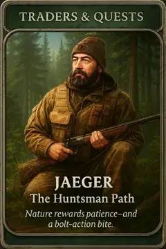
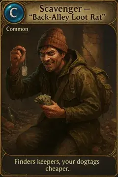
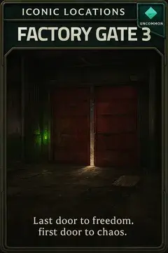
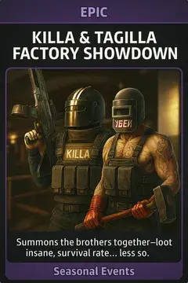
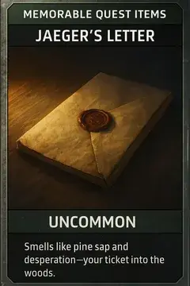
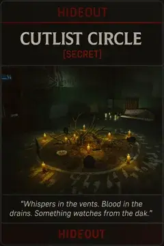
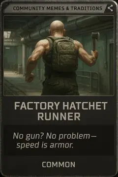
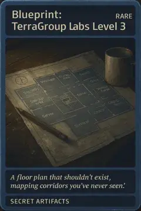

![[TTC] Tarkov Trading Cards thumbnail](../../../assets/010a09e329b40121d1289caf108bd4713670f788734defe2128a945907273c19.webp)
[TTC] Tarkov Trading Cards
- Downloads
- 25,409
- Favourites
- 27
- Mod lists
- 51
⚠️ MOD DEPENDENCY ⚠️
requires Color Converter API.
requires QuestsExtended.
optional, but highly recommended Item Preview QoL + screenshots.
🃏 Transform your raids into a collectible obsession!
THE CITY Trading Cards adds 300 unique AI-generated collectible cards, a custom trader (Kolya), 340 quests, and a full barter reward system to SPT— turning every raid into a treasure hunt.
Cards drop from containers and scav inventories across all maps. Collect them, complete themed quests, and trade them back to Kolya for real gear — weapons, armor, keys, ammo, containers, and more.
What’s new in 3.0:
- 🧑💼 Kolya — custom trader with 4 loyalty levels and 340 quests
- 🎯 20 themed quest chains — each with a binder quest, 15 card quests, and a collection quest
- 💰 300 card barters — trade cards for weapons, armor, keys, scav case results, and more
- 🎁 Booster Pack — buy 5 random cards at Kolya for 200K₽
- 🏆 Endgame rewards — MEGA Binder, Card Case, THICC cases, Red Rebel, T-7 thermals, keycards
- 🤖 Scav card drops — cards now appear in scav pockets, vests, and backpacks
- 🛡️ PMC loot fix — cards no longer spam PMC bot inventories
💡 Pro tip: Right-click any card and select “Required search” to see which quest requires it and what barter it unlocks at Kolya!
⚠️ Recommended: start a new profile. Quests are designed as a progressive experience from level 1, scaling in difficulty alongside your trader progression.
Meet Kolya (Nikolai Vetrov)
Kolya is a former TerraGroup archivist turned card collector. He’s your quest giver, card trader, and barter dealer — available from the start at LL1.
Loyalty Levels:
- LL1 — 0 standing (start)
- LL2 — 1.80 standing (~3 complete themes)
- LL3 — 4.00 standing (~6 complete themes)
- LL4 — 6.50 standing (~10 complete themes)
Every card quest gives standing based on rarity — harder cards give more reputation:
- Common: +0.01 standing, 1,000 XP
- Uncommon: +0.02 standing, 3,000 XP
- Rare: +0.03 standing, 10,000 XP
- Epic: +0.05 standing, 20,000 XP
- Legendary: +0.08 standing, 35,000 XP
- Secret: +0.10 standing, 60,000 XP
- Collection: +0.15 standing, 50,000 XP
Quest Structure (per theme)
Each of the 20 themes follows the same structure:
- Binder Quest — easy intro objective, rewards the theme’s binder
- 15 Card Quests — chained by rarity (Common → Secret), each with themed objectives
- Collection Quest — hand over all 15 cards for a major reward
340 quests total (20 binders + 300 cards + 20 collections).
Quest objectives are varied and thematic — kills with specific weapons, map exploration, item handovers, hideout upgrades, trader loyalty, boss kills, zone-specific combat, and 60+ custom condition types via QuestsExtended.
Every card quest unlocks a barter at Kolya — you can trade the card for useful gear. This creates a strategic choice:
- Keep the card → complete the collection quest for a bigger endgame reward
- Trade the card → get immediate gear to help your current progression
You’ll find duplicate cards in raid — trade the extras, keep one for the collection. Cards found in raid aren’t required to be FIR for barters or collections.
💡 Pro tip: Right-click any card and select “Required search” to see which quest requires it and what barter it unlocks at Kolya!
Barter Examples
Some of the more interesting barters you can unlock:
| Card | Barter Reward |
|---|---|
| Ammo Accountant (Uncommon) | 60× 5.45 BT + 60× 5.56 M855A1 |
| Rat King (Rare) | Lucky Scav Junkbox |
| Ambush Artist (Epic) | VSS Vintorez (full build) + 2 mags + 60× SP-6 |
| Misfire in Labs (Epic) | 3× Labs access keycard |
| No Footstep Audio (Legendary) | 1× of every headset in the game (12 total) |
| Stash Tetris World Record (Uncommon) | Item case |
| One Tap Montage (Epic) | 120× M61 ammo |
| Ragman “The Stylish One” (Legendary) | Slick plate carrier (with plates) |
| Guy on the Stairs (Epic) | 5× random keys |
| Dorms Marked Room Ritual (Legendary) | Cultist Circle reward |
| Various Secret cards | 3× Scav Case (Intel) result |
Plus scav case results at various tiers (2.5K, 15K, 95K, Moonshine, Intel), random medical supplies, random keys, and direct item rewards (roubles, ammo, grenades, NVGs, scopes, and more).
🎁 Booster Pack (200K₽, LL1)
Buy a sealed Booster Pack from Kolya. You’ll receive 5 weighted-random cards + 1 Empty Booster Pack via mail.
Your first Booster Pack is free — completing the Welcome to the Collection quest sends one via mail automatically.
📦 Containers
| Container | Price | LL | Description |
|---|---|---|---|
| Themed Binders (×20) | Quest reward | LL1 | One slot per card in the theme. No duplicates. Perfect for tracking progress. |
| Empty Booster Pack | Included in Booster Pack | — | 4×4 grid for quick card storage |
| MEGA Binder | 5M₽ | LL4 | 300 slots — one for every card across all 20 themes |
| Card Case | 2M₽ | LL4 | 15×15 grid (225 slots) for bulk card storage |
All TTC containers are 1×1 in size. Cards are also compatible with SICC and Docs cases.
🎴 300 Unique Cards
- Fully AI-generated artwork — no reused templates, every card has a unique style
- Imperfections and visual glitches are part of the charm
- Six rarities: Common → Uncommon → Rare → Epic → Legendary → Secret
📚 20 Themes
| # | Theme | Cards | Flavor |
|---|---|---|---|
| 1 | Bosses & Mini-Bosses | 15 | Killa, Tagilla, Reshala, and every boss documented |
| 2 | Iconic Weapons | 15 | AK-74N, VSS, Mosin, M4, Glock 18C… |
| 3 | Iconic Locations | 15 | Dorms, Labs, Resort, Lighthouse, Reserve… |
| 4 | Hideout | 15 | Bitcoin Farm, Scav Case, Solar Power… |
| 5 | Factions & PMC | 15 | BEAR, USEC, Rogues, Raiders, Cultists… |
| 6 | Many Ways to Die | 15 | Head-Eyes, landmines, grenades, dehydration… |
| 7 | Player Archetypes | 15 | Rat King, Chad, Hatchling, Extract Camper… |
| 8 | Traders & Quests | 15 | Prapor, Jaeger, Mechanic, Lightkeeper… |
| 9 | Legends of Scav Life | 15 | Tushonka, Vodka, Tracksuit, Mosin dreams… |
| 10 | Memorable Quest Items | 15 | Pocket Watch, Flash Drives, LEDX, Tank Battery… |
| 11 | THE CITY Fails | 15 | Wrong ammo, self-flash, grenade cooking fails… |
| 12 | Community Memes | 15 | Wiggle, Factory Friday, Chad vs Rat, Kappa grind… |
| 13 | Streamer Moments | 15 | Pestily, LVNDMARK, Klean, DeadlySlob, Veritas… |
| 14 | Legends of the Wipe | 15 | Day one rush, first Labs, Kappa chase… |
| 15 | Bugged Reality | 15 | Desync, rubber-banding, invisible backpacks… |
| 16 | Secret Artifacts | 15 | Encrypted drives, cultist relics, TerraGroup keys… |
| 17 | Patch Note Parodies | 15 | “Fixed desync”, “AI smarter”, “Recoil rework”… |
| 18 | Seasonal Events | 15 | Christmas, Halloween, Twitch Drops, April Fools… |
| 19 | SPT vs EFT | 15 | Solo Peace, Flea Freedom, Wipe When You Want… |
| 20 | Mods & SPT Legends | 15 | SAIN, Looting Bots, Realism, DynamicMaps, TTC… |
🖼️ Example Cards
(10 cards from 10 themes — the other 10 themes are hidden to keep the surprise!)
-
Iconic Weapons

-
Bosses & Mini-bosses

-
Traders & Quests

-
Factions & PMC

-
Iconic Locations

-
Seasonal Events

-
Memorable Quest Items

-
Hideout

-
Community Memes & Traditions

-
Secret Artifacts

Edit config/mod_config.jsonc:
General Settings
| Setting | Default | Description |
|---|---|---|
enable_container_spawns |
true |
Cards spawn in loot containers |
cards_examined_by_default |
false |
Cards show as “???” until examined |
cards_tradeable_on_flea |
false |
Allow cards on flea market |
cards_sold_on_fence |
false |
Fence sells TTC cards |
blacklist_cards_from_pmc_loot |
true |
Prevent cards on PMC bots |
enable_quests |
true |
Enable Kolya’s quests (Kolya stays as trader even when false) |
unlock_all_barters |
false |
All barters available without quest completion |
Spawn Rate Tuning
Global multiplier — card_weight_multiplier:
0= no cards ·0.5= less ·1= normal (default) ·2= more ·3+= lots
Per-rarity weights — rarity_weights (must add up to 1.0):
| Rarity | Default |
|---|---|
| Common | 0.50 |
| Uncommon | 0.28 |
| Rare | 0.15 |
| Epic | 0.05 |
| Legendary | 0.015 |
| Secret | 0.005 |
Per-container multipliers — fine-tune spawn rates for specific container types (jackets, safes, duffle bags, etc.)
Download and extract the zip to your SPT root folder
⚠️ Recommended: start a fresh profile for the best experience. Quests scale from level 1 and progress alongside your trader unlocks.
- Remove the mod folders
- open “\SPT\SPT_Data\configs\core.json” → set “removeModItemsFromProfile” to true
- Launch the server once, done
💬 Feedback Welcome!
Let me know what you think about:
- Spawn rates, card balance, theme ideas
- Quest difficulty and barter balance
- Suggestions for new cards, features, or tweaks
🐛 Issues
Report bugs on GitHub.
🙏 Special Thanks
- WTT Team — modding tools, tutorials, and community support
- [Collectibles] Hololive OCG Cards — config and code foundations
- QuestsExtended — 60+ custom quest condition types
If you enjoy TTC and want to support my work, feel free to buy me a coffee!

All my mods are free and open source. Your support keeps me motivated to create more!
Version
3.0.8
TTC 3.0.8 — Hotfix
Fixes
-
“Deal X damage with grenades” quest objectives were not tracking — The condition type was incorrect. Now works properly with all throwable explosives.
-
Collection reward crates and multi-item barter crates could appear as cheap scav case loot — These crates now have a high handbook value preventing them from being rolled by the scav case generator.
Version
3.0.7
TTC 3.0.7 — Sell crates to open them
New
- Reward crates stuck in your stash can now be opened by selling them to any trader — You’ll receive the crate’s rewards via mail from Kolya. No roubles are gained from the sale — only the rewards.
Fix
- Cheap scav case results could contain expensive reward crates — Reward crate values now match their tier, preventing a 2.5K scav case from rolling an Intel-tier crate.
Version
3.0.6
TTC 3.0.6 — Scav card loot config
New
- New config option:
enable_cards_in_scav_loot— Set tofalseinmod_config.jsoncto prevent scavs from carrying cards. Enabled by default.
Version
3.0.5
TTC 3.0.5 — Transaction quest persistence fix
Fix
- “Earn X₽ from transactions” quest progress now persists between sessions — Previously, selling items to traders would progress the quest objective, but the progress was lost when restarting the game. Now properly synced with the server.
Version
3.0.4
TTC 3.0.4 — Fix QE conditions not tracking
- QuestsExtended conditions not working for some users — The QE condition mapping file (
TTC_quests.json) was only included in the server mod folder, but QE reads it fromBepInEx/plugins/QuestsExtended/Quests/. The file is now included in the correct location. This affected all QE-tracked conditions (KillsWhileADS, SearchContainer, DamageWithAR, etc.).
Version
3.0.3
TTC 3.0.3 — Fix survive & extract quest conditions
Fix
- “Survive and extract” quest conditions were not tracking — Objectives like “Survive and extract 3 times” never progressed, no matter how many raids you completed. Now works correctly on all maps. Just update and restart the server.
Version
3.0.2
TTC 3.0.2 — Non-English locale fix
Fix
- Quest text garbled on non-English clients — Players using Chinese, Korean, Russian, or any non-English game language saw raw locale keys (e.g.
e2a7f99d463aef2fadd2166e name) instead of quest names and descriptions. Quest text now displays correctly on all 17 supported languages. Text remains in English as a fallback.
Version
3.0.1
🔧 TTC 3.0.1 — Hotfix
Quick patch for two bugs reported by the community. Thank you for the fast feedback!
Fixes
-
Fence was selling reward packages for 1,300₽ — Fence could sell items like THICC cases, holodilniks, and other quest rewards for almost nothing. All TTC reward items are now properly excluded from Fence’s inventory.
-
Couldn’t sell cards to Kolya — Cards showed “The trader cannot buy this item” when trying to sell to Kolya. Fixed — you can now sell any item to Kolya, including cards.
-
Kolya loyalty levels weren’t applied correctly — LL2/LL3/LL4 thresholds were using old values. Now properly set to LL2 at ~3 themes, LL3 at ~6, LL4 at ~10 complete themes.
Version
3.0.0
🃏 TTC 3.0 — Kolya Trader, 340 Quests, Card Barters & Booster Pack
The biggest TTC update yet. Cards are no longer just collectibles — they’re now a full progression system with a custom trader, 340 quests, and 300+ barters.
🧑💼 Meet Kolya
A new custom trader with 4 loyalty levels, 340 quests, and over 300 barters. Complete themed quest chains, trade your cards for real gear, and unlock endgame rewards.
- 20 themed quest chains (Bosses, Weapons, Locations, Memes, Streamers, and 15 more)
- 300 card barters — every card can be traded for useful items (weapons, armor, keys, ammo, containers…)
- 20 collection rewards — complete a full theme for major loot (THICC cases, Red Rebel, T-7 thermals, all keycards, and more)
- Loyalty progression — every quest gives standing based on card rarity. Reach LL4 at ~10 complete themes.
🎁 Booster Packs
Buy sealed Booster Packs from Kolya for 200K₽. Each pack contains 5 random cards + 1 Empty Booster Pack, delivered via mail.
- Your first pack is free — awarded when you accept Kolya’s welcome quest
💰 Collect or Trade?
Every card quest unlocks a barter at Kolya. This creates a real choice:
- Keep the card → save it for the collection quest and earn a bigger endgame reward
- Trade the card → get immediate gear to help your progression right now
You’ll find duplicates in raid — trade the extras, keep one for the collection.
🏆 Endgame (LL4)
Reach Kolya LL4 to unlock:
- MEGA Binder (5M₽) — 300 slots, one for every card in the game
- Card Case (2M₽) — 15×15 grid storage for your growing collection
🤖 Scav Loot & PMC Fix
- Cards now drop from scav pockets, vests, and backpacks (rarity-weighted)
- Fixed: PMC bots no longer spawn with 5+ cards — uses SPT’s native
GlobalLootBlacklist - Configurable via
blacklist_cards_from_pmc_lootin config
⚙️ New Config Options
enable_quests— disable quests but keep Kolya as a trader with all barters unlockedunlock_all_barters— keep quests but unlock all barters without completing themblacklist_cards_from_pmc_loot— toggle PMC card drops
📦 Other Changes
- Item weights fixed (binders 0.2kg, containers 0.1kg — down from 1kg)
- Server and client DLLs updated to version 3.0.0
⚠️ Important
- Requires QuestsExtended for advanced quest conditions
- Recommended: start a new profile — quests are designed as a progressive experience from level 1
💡 Tips
- Right-click any card → “Required search” to find its quest and barter at Kolya
- Common/Uncommon barters give early-game gear (ammo, meds, maps, backpacks)
- Rare+ barters give mid-to-late gear (weapons, containers, Labs keycards)
- Collection rewards are the real prizes — plan which themes to complete first
- Some barters give Scav Case results (Intel tier, Moonshine tier) or Cultist Circle rewards — great for gambling!
If you enjoy TTC, consider supporting my work:
Version
2.0.1
🎴 Migration to SPT 4.0
✨ TL;DR
- 🚀 Full migration to C# for SPT 4.0
- 🎯 Rarity‑first loot
- 🔕 Quiet logs
🔄 Loot: what changed (simple explanation)
Imagine cards are candies and containers are jars.
Before (1.x / SPT 3.11)
- We tossed candies into jars one by one.
- Result: some jars got too many, others too few. Hard to keep balance.
Now (2.0 / SPT 4.0)
- We sort candies by color (rarity) first, then share each color fairly across jars.
- Result: it’s fairer, more predictable, and easier to tune.
What this means for you
- Common cards show up regularly; rare ones stay rare.
- Big containers don’t drown out small ones: each jar keeps its share.
- You get one big slider for “more/less cards” for the whole game, and small sliders for specific containers.
How to adjust in 10 seconds
- Too many cards? lower the big slider (card_weight_multiplier).
- Not enough? raise it gently.
- One container too hot or too cold? tweak only its multiplier (container_multipliers).
📝 Notes
- 2.0 focuses on stability and clarity: clean orchestration, dedicated domain services, better loot generation system.
Happy collecting — and enjoy tuning! 🎉
Dependencies
Version
1.4.0
🎴 THE CITY Trading Cards v1.4 — 200 new cards, smarter spawns, Fence control
✨ TL;DR
- 📦 +200 new cards across themes, incl. 10 brand‑new themes
- 🎯 Default card drop rate reduced by 5× (safer baseline)
- 🎛️ Per‑container loot multipliers for precise tuning
- 🔒 Fence selling toggle with auto‑blacklist when disabled
📦 New content: +200 cards and 10 new themes
- 200 new cards total.
- Distribution:
- Old themes: +5 cards each.
- New themes (10): +15 cards per new theme.
- Themed binders are available so you can collect by category.
🆕 New themes
- 🐞 bugged_reality — Glitches, desyncs, and cursed moments from THE CITY’s twilight zone.
- 🏆 legends_of_scav_life — The mythos of everyday Scav survival.
- 🏆 legends_of_the_wipe — Iconic wipe highlights and community milestones.
- 💀 many_ways_to_die — Creative casualties and lessons learned the hard way.
- 🧩 mods_spt_legends — Community mod nods and SPT hall‑of‑fame moments.
- 🗒️ patch_note_parodies — “What if?” balance notes you can actually laugh at.
- 🎭 player_archetypes_and_playstyles — From Chad to Rat and everything between.
- ⚖️ spt_vs_eft — Witty contrasts between SPT and official EFT quirks.
- 📺 streamer_moments — Memorable clips and streamer‑made lore.
- 🤦 tarkov_fails — Oops. Boom. Extract denied.
🎯 Default spawn rate reduced (5×)
- The global baseline for TTC card drops is now 5× lower to reduce saturation by default.
- Keep card_weight_multiplier = 1 for the new baseline. If you previously tuned it, note that 1 now roughly matches the old 0.2 feeling.
🎛️ Per‑container loot multipliers
- container_multipliers lets you scale TTC card spawns per container template ID (globally, all maps).
- 1 keeps defaults, <1 reduces, >1 increases.
- Example: cut Safe spawns in half by setting its template ID to 0.5.
🔒 Fence blacklist option
- New flag: cards_sold_on_fence in config/mod_config.jsonc.
- When false, TTC cards are purged from Fence’s assort and added to his blacklists so refreshes can’t reintroduce them.
- When true, Fence may sell TTC cards.
⚙️ Configure at a glance
- cards_sold_on_fence: Allow or block Fence from selling TTC cards.
- card_weight_multiplier: Global knob for all card drop weights.
- container_multipliers: Per‑container scaling (by template ID).
Happy collecting, and have fun tuning! 🎉